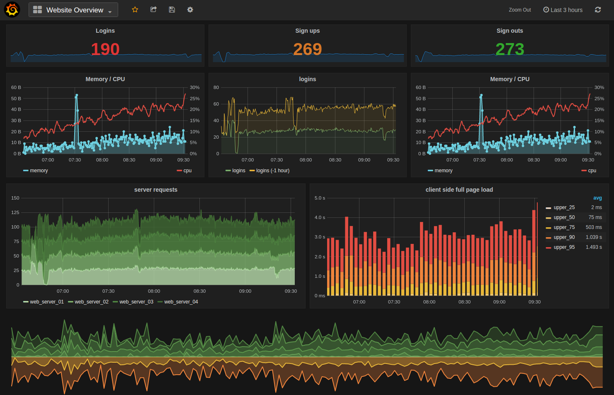
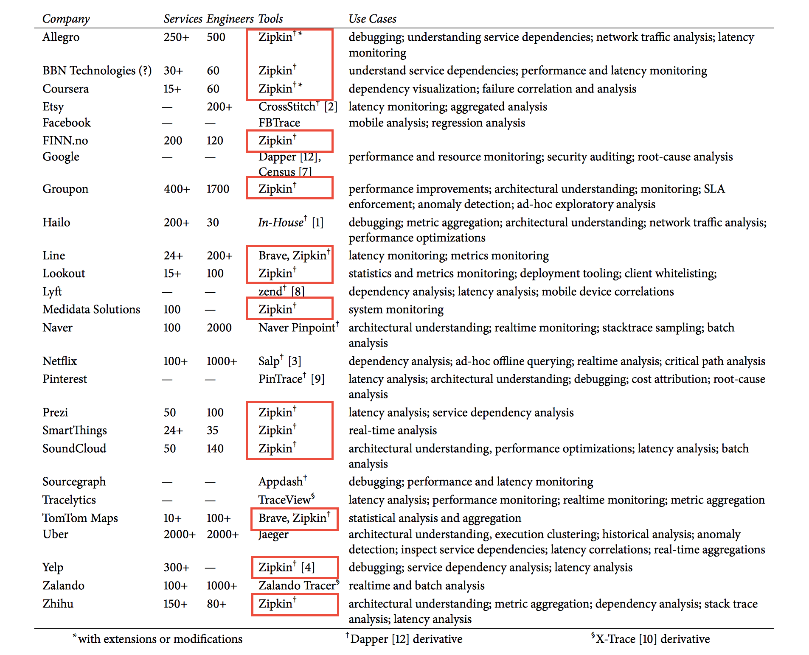
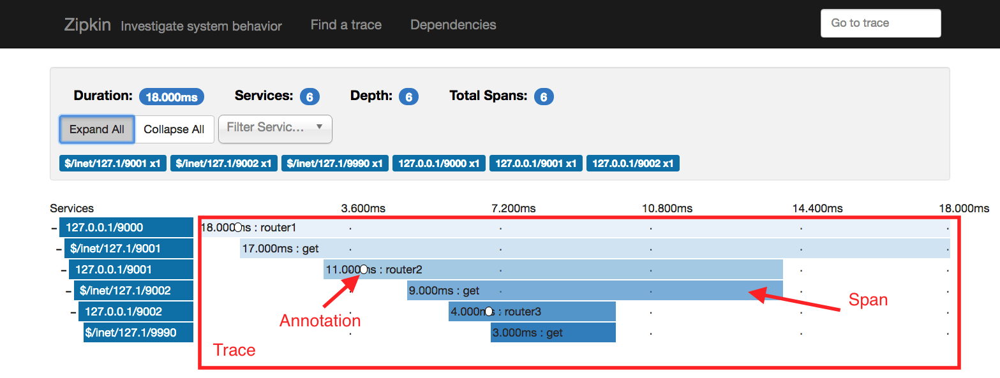

Introduction to Distributed Tracing
Nikolay Novik
KyivPy 22
I am ...
- Software Engineer: at DataRobot Ukraine
- Github: https://github.com/jettify
- Twitter: https://twitter.com/isinf
- aio-libs: https://github.com/aio-libs
- My Projects:
- database clients:
aiomysql, aioobc - web and etc:
aiomonitor, aiohttp-debugtoolbar, aiobotocore, aiohttp-mako, aiohttp-admin, aiorwlock, aiozipkin
- database clients:
How many of you heard of distributed tracing?
- I read Dapper papers.
- I heard about this and know key ideas.
- I think distributed tracing is kinda cool.
Problem statement

- User response are slow where is bottle neck?
- Standard tools are broken, cprofile is not helping
- How many services participate in serving this http route?
- What is going on in this madness in first place?
Tools we have: Metrics

- Aggregates events per service
- Insights about trends and alerts
- No per request overview
Tools we have: Logs
- Records discrete events
- Manual correlation
- Usually expensive
What is Distributed Tracing?
Distributed Tracing - is a tool that helps gather timing data needed to troubleshoot latency problems in service oriented architectures. Provides an end-to-end view of requests as they travel through your application, and shows a map of your application’s underlying components.
Popularity started from Google Dapper paper (2010) and microservices hype
Google Dapper Tracing Tool Goals
- Low overhead
- Application transparency
- Scalability
Google Dapper: Low overhead
- Employ sampling to for low overhead
- Sample of just one out of thousands, provides sufficient information for many common use cases
- Low network overhead, context is tiny
Google Dapper: Scalability
- Data written in local log files
- Collectors pulls data from all production hosts
- Results are stored in regional BigTable
Google Dapper: Application transparency
- Tracing mostly transparent for developer
- Instrumented RPC library used by all services
- Trace context sits in thread local storage, so instrumentation can pick it when required
Zipkin strait forward implementation of Dapper ideas

- Opensourced by Twitter Inc.
- https://github.com/openzipkin/zipkin
- https://twitter.com/zipkinproject
Firefighter tools

Zipkin in the wild

Other tools for Distributed tracing
Zipkin Glossary

- Span represents one specific method (RPC) call
- Annotation string data associated with a particular timestamp in span
- Binary Annotation - key and value associated with given span
- Trace - collection of spans, related to serving particular request
Identifying Services interacting with request

Identifying duplicate calls
Identifying Slow requests
Identifying serial execution

Service dependency analysis
Show me real code
References
- Karger, David, et al. "Consistent hashing and random trees: Distributed caching protocols for relieving hot spots on the World Wide Web." Proceedings of the twenty-ninth annual ACM symposium on Theory of computing. ACM, 1997.
- Chandra, Tushar Deepak, and Sam Toueg. "Unreliable failure detectors for reliable distributed systems." Journal of the ACM (JACM) 43.2 (1996): 225-267.
- Das, Abhinandan, Indranil Gupta, and Ashish Motivala. "Swim: Scalable weakly-consistent infection-style process group membership protocol." Dependable Systems and Networks, 2002. DSN 2002. Proceedings. International Conference on. IEEE, 2002.
- Dabek, Frank, et al. "Vivaldi: A decentralized network coordinate system." ACM SIGCOMM Computer Communication Review 34.4 (2004): 15-26.
- Leitao, Joao, José Pereira, and Luis Rodrigues. "HyParView: A membership protocol for reliable gossip-based broadcast." Dependable Systems and Networks, 2007. DSN'07. 37th Annual IEEE/IFIP International Conference on. IEEE, 2007.
- Stoica, Ion, et al. "Chord: A scalable peer-to-peer lookup service for internet applications." ACM SIGCOMM Computer Communication Review 31.4 (2001): 149-160.
- Bailis, Peter, and Kyle Kingsbury. "The network is reliable." Queue 12.7 (2014): 20.
- Lamport, Leslie. "Time, clocks, and the ordering of events in a distributed system." Communications of the ACM 21.7 (1978): 558-565.b
Thank you!
aio-libs: https://github.com/aio-libs